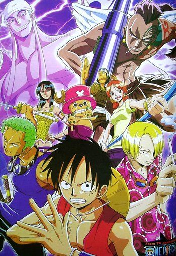

Episódios: 136 a 206
Dois arcos filler marcam o início desta saga. No primeiro, Luffy e sua equipe chegam a uma ilha habitada por um grande número de carneiros. Lá, eles aproveitam a oportunidade para ajudar um homem, enquanto fogem da perseguição da marinha. No segundo, a tentativa de fugir da marinha leva o grupo de piratas até a ilha Ruluka. O local era comandado por um ditador que a equipe de Luffy tenta enfrentar. Ao mesmo tempo, eles lutam para sobreviver ao uso da Rainbow mist, uma espécie de névoa que abre um portal para outra dimensão e é usada para capturar a tripulação. Os Chapéus de Palha dão início ao Arco Jaya com um nova companheira de tripulação, Nico Robin. Neste arco, os piratas tentam resolver o mistério de um barco que caiu do céu e de um mapa que mostra uma cidade chamada Skypiea, enquanto enfrentam os piratas de Masira. A aventura acaba levando a tripulação à ilha de Jaya, onde fica a cidade portuária Mock Town, conhecida por ser cheia de piratas. Já no arco Skypiea, o grupo de Luffy chega à ilha no céu conhecida como Skypiea. Embora sua ida ao local tenha sido motivada pela procura por outro, a tripulação acaba percebendo que a ilha corre risco de ser destruída pelo temido Enel.
